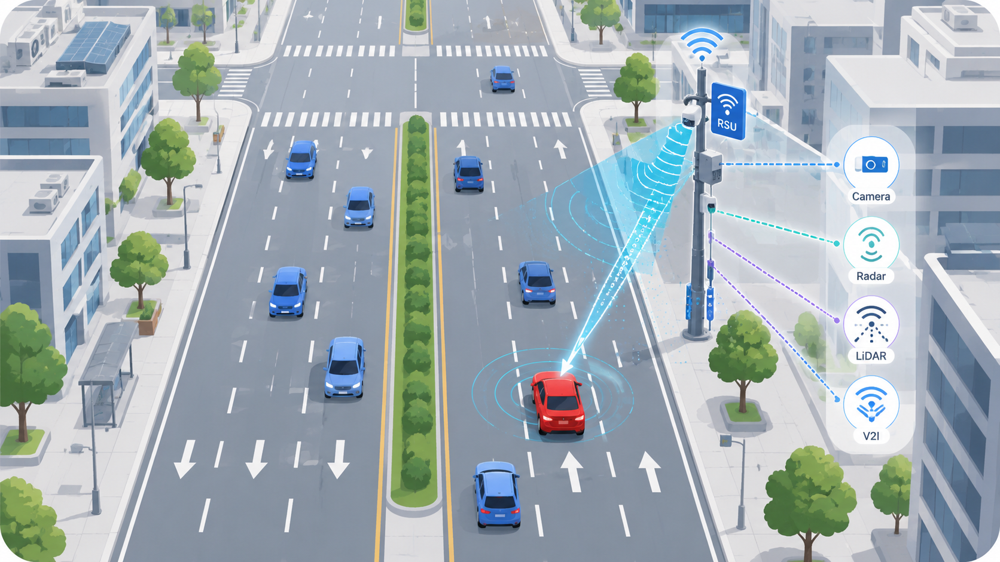
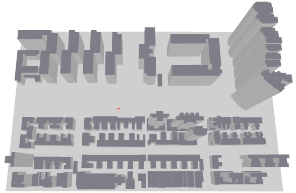
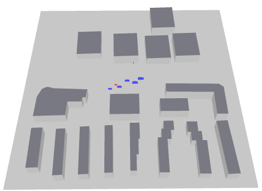
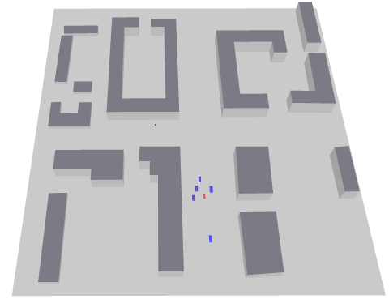
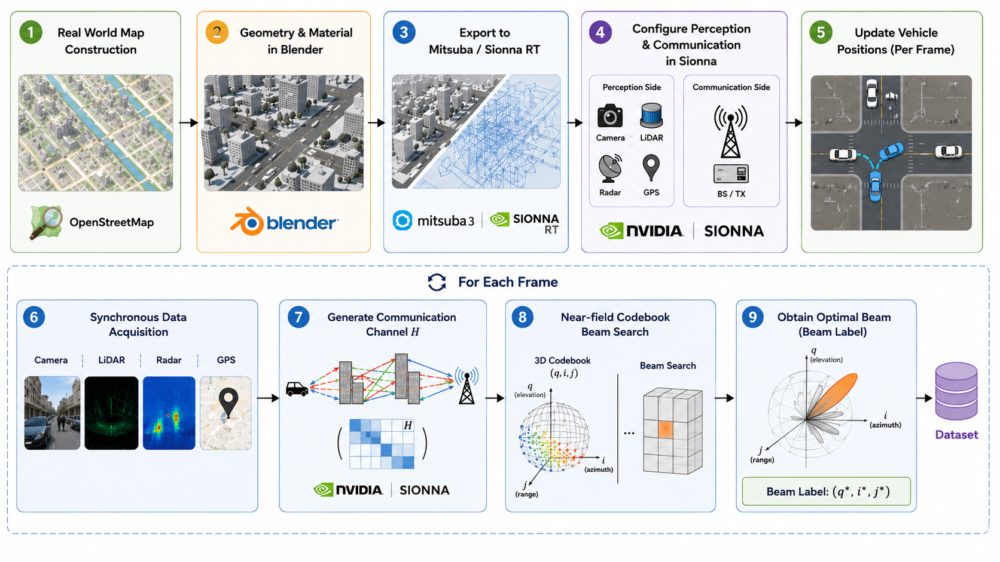

Generation Pipeline
- Load roads and buildings from OpenStreetMap data.
- Configure traffic scenes, vehicle motion, and sensing viewpoints.
- Generate synchronized sensing records and V2I channels in Sionna.
A multimodal V2X dataset integrating camera, LiDAR, radar, GPS, and communication data.
Built for integrated sensing and communication (ISAC) tasks in urban V2I scenarios.
V2X-SenseComm generates multimodal V2I data from configurable urban scenes. Road maps are loaded from OpenStreetMap world data and reconstructed in Sionna ray tracing to produce synchronized near-field sensing and communication samples.
Each sample aligns scene metadata, vehicle states, camera, LiDAR, radar, GPS, ray-tracing V2I channels, and communication-side labels. Scenarios, sensing viewpoints, weather, carrier frequency, vehicle speed, and traffic settings can be configured for different ISAC tasks.

V2X-SenseComm contains 20 urban map scenes with bidirectional six-lane roads. From the inner lane to the outer lane, the baseline vehicle speeds are set to 5 m/s, 15 m/s, and 25 m/s.



| Scene ID | Region / City | Traffic Type | Propagation | Category | Dataset Split |
|---|---|---|---|---|---|
| scene_01 | Beijing | Single vehicle | LoS / mixed | Single-Vehicle | Training |
| scene_02 | Beijing | Single vehicle | LoS / mixed | Single-Vehicle | Training |
| scene_03 | Beijing | Single vehicle | LoS / mixed | Single-Vehicle | Training |
| scene_04 | Hong Kong | Single vehicle | LoS / mixed | Single-Vehicle | Training |
| scene_05 | Hong Kong | Single vehicle | LoS / mixed | Single-Vehicle | Training |
| scene_06 | Manhattan | Dynamic traffic | LoS / mixed | Dynamic Traffic | Training |
| scene_07 | Boston | Dynamic traffic | LoS / mixed | Dynamic Traffic | Training |
| scene_08 | London | Dynamic traffic | LoS / mixed | Dynamic Traffic | Training |
| scene_09 | London | Dynamic traffic | LoS / mixed | Dynamic Traffic | Training |
| scene_10 | Nanjing | Dynamic traffic | LoS / mixed | Dynamic Traffic | Training |
| scene_11 | Nanjing | Dynamic traffic | LoS / mixed | Dynamic Traffic | Training |
| scene_12 | Nanjing | Dynamic traffic | LoS / mixed | Dynamic Traffic | Training |
| scene_13 | Shanghai | Single vehicle | LoS / mixed | Single-Vehicle | Test |
| scene_14 | Shanghai | Dynamic traffic | LoS / mixed | Dynamic Traffic | Test |
| scene_15 | Shanghai | Dynamic traffic | NLoS / mixed | NLoS Corner | Test |
| scene_16 | Beijing | Dynamic traffic | NLoS corner | NLoS Corner | Training |
| scene_17 | Beijing | Dynamic traffic | NLoS corner | NLoS Corner | Training |
| scene_18 | Beijing | Dynamic traffic | NLoS corner | NLoS Corner | Training |
| scene_19 | New York | Dynamic traffic | NLoS corner | NLoS Corner | Training |
| scene_20 | New York | Dynamic traffic | NLoS corner | NLoS Corner | Training |
Each sample is indexed by scene, speed run, and frame. The index file links synchronized sensing files, ray-tracing communication channels, beam labels, and metadata for direct loading in Python.
A synchronized sample sequence from scene_12 / speed_+25 is visualized below. The four panels show aligned image, LiDAR, radar FFT angle spectrum, and channel-label views from the same frames.


The root index files provide dataset-level access. Each scene has its own index, and each speed run stores frame-level samples. A single row points to all files belonging to the same frame, so sensing observations, channel matrices, and beam labels can be loaded together.
dataset/
├── index.csv
├── train_index.csv
├── test_index.csv
├── scene_01/
│ ├── index.csv
│ ├── speed_+5/
│ │ ├── meta.json
│ │ ├── index.csv
│ │ ├── camera/
│ │ │ ├── frame_000000.png
│ │ │ ├── frame_000001.png
│ │ │ ├── ...
│ │ ├── lidar/
│ │ │ ├── frame_000000.npz
│ │ │ ├── frame_000001.npz
│ │ │ ├── ...
│ │ ├── radar/
│ │ │ ├── frame_000000.npz
│ │ │ ├── frame_000001.npz
│ │ │ ├── ...
│ │ ├── gps/
│ │ │ ├── frame_000000.npz
│ │ │ ├── frame_000001.npz
│ │ │ ├── ...
│ │ ├── channel/
│ │ │ ├── frame_000000.npz
│ │ │ ├── frame_000001.npz
│ │ │ ├── ...
│ │ ├── beam_label/
│ │ ├── frame_000000.json
│ │ ├── frame_000001.json
│ │ ├── ...
│ ├── ...
│ ├── speed_-5/
│ ├── ...
├── ...
├── scene_20/The dataset uses run-level metadata, three-level index files, and frame-wise modality files. Each frame is stored as aligned sensing, channel, GPS, and beam-label files referenced by the index.
dataset/index.csv: global index covering all scenes and runs.dataset/<scene_id>/index.csv: scene-level index.dataset/<scene_id>/<run_id>/index.csv: run-level index for one speed configuration.frame_idx, scene_id, run_id, weather_type, enable_occluder_cars, and paths to all frame files.camera/frame_xxxxxx.png PNG image RGB image captured from the infrastructure-side sensing viewpoint.index.csv.lidar/frame_xxxxxx.npz stores point-cloud arrays for one frame.xyz shape: Np x 3 3D point coordinates, where Np is the number of valid points in that frame.distance shape: Np Per-point range values aligned with the LiDAR point cloud.radar/frame_xxxxxx.npz stores the raw radar cube for one frame.radar_cube shape: 32 x 128 x 256 Complex radar tensor organized by chirps, antennas, and fast-time samples.gps/frame_xxxxxx.npz stores position information for the target vehicle.true_position shape: 3 Ground-truth vehicle position in 3D coordinates.measured_position shape: 3 GPS-like measured position with noise.channel/frame_xxxxxx.npz stores the communication channel for one frame.H shape: 1024 x 612 Complex V2I channel matrix generated by ray tracing. In the current configuration, the first dimension corresponds to transmit antenna elements and the second dimension corresponds to subcarriers.beam_label/frame_xxxxxx.json stores codebook-search labels and beam-related annotations.best_beam_index_3d shape: 3 Optimal beam index in the 3D codebook space, corresponding to distance, azimuth, and elevation dimensions.best_power Scalar received power of the selected best beam.los_exists Boolean flag indicating whether a LoS path exists.topk_indices shape: 5 x 3 Top-5 beam candidates represented by 3D codebook indices.topk_powers shape: 5 Beam power values associated with the top-5 candidates.dataset/scene_01/speed_+5/meta.json.scene_id, scene_source, run_id, num_frames, total_distance, and frame_interval_s.start_position, velocity_vec, sensing_tx_offset, and comm_rx_offset.weather_type, enable_occluder_cars, and num_occluder_cars.
A sample can be loaded from one row of train_index.csv or test_index.csv. The row stores
relative paths to every modality, so the loader only needs to join each path with the dataset root.
from pathlib import Path
import json
import numpy as np
import pandas as pd
from PIL import Image
root = Path("dataset")
index = pd.read_csv(root / "train_index.csv")
sample = index.iloc[0]
camera = Image.open(root / sample.camera_path)
lidar = np.load(root / sample.lidar_path)
radar = np.load(root / sample.radar_path)
gps = np.load(root / sample.gps_path)
channel = np.load(root / sample.channel_path)
with open(root / sample.beam_label_path, "r", encoding="utf-8") as f:
beam_label = json.load(f)
points = lidar["xyz"]
radar_cube = radar["radar_cube"]
H = channel["H"]
best_beam = beam_label["best_beam_index_3d"]V2X-SenseComm is generated through a complete workflow from map preparation to multimodal sensing, V2I channel simulation, near-field codebook search, and beam-label generation.
The pipeline starts from OSM-based map construction, adds geometry and materials in Blender, exports Mitsuba/Sionna-ready scenes, and then performs Sionna-based sensing, communication, near-field codebook search, and beam-label generation for each simulated frame.

The repository separates map assets, configuration files, scene construction, sensing simulators, communication modules, and dataset writing logic. This structure makes the generation process easier to modify: scenes are selected in configuration files, sensors and channel parameters are defined once, and the pipeline executes the frame-wise data collection and labeling workflow.
V2X/ ├── run/ │ └── dataset_generation.py ├── configs/ │ ├── base_config.py │ └── scene_map.py ├── scene_builder/ │ ├── sensing_scene_builder.py │ ├── comm_scene_builder.py │ ├── sensing_scene_updater.py │ └── comm_scene_updater.py ├── sensors/ │ ├── camera_simulator.py │ ├── lidar_simulator.py │ ├── radar_simulator.py │ └── gps_simulator.py ├── communication/ │ ├── channel_simulator.py │ ├── codebook_loader.py │ ├── beam_labeler.py │ ├── label_writer.py │ └── path_utils.py ├── pipeline/ │ ├── comm_pipeline.py │ └── dataset_pipeline.py ├── maps/ ├── textures/ ├── codebook/ ├── dataset/ └── utils/
Batch-generation entry point.
Default settings and scene mapping files.
Scene construction and frame-wise scene updates.
Modality-specific simulators for synchronized sensing data collection.
Communication-channel generation, codebook loading, beam search, and label writing.
Pipeline modules that connect scene updates, sensing capture, channel simulation, label generation, and index writing.
Static assets used by the generation pipeline.
Generated outputs and shared helper functions.
Install the ray-tracing runtime, prepare the exported scene assets, select the scenes and generation parameters, then run the batch script from the project root.
# Clone the project
git clone https://github.com/fly-winder/V2X-SenseComm.git
cd V2X-SenseComm
# Install TensorFlow/Sionna RT and common Python dependencies
pip install -r requirements.txt
# Main configuration entry points
configs/scene_map.py # SCENE_MAP: scene_id -> maps/...xml
run/dataset_generation.py # SPEED_LIST, MOTION_AXIS, WEATHER_TYPE, OUTPUT_ROOT
configs/base_config.py # camera/lidar/radar/gps, channel, array, codebook
# Run dataset generation
python run/dataset_generation.pyThe code will be released after publication.
Publications will be updated after the related papers are available.
The V2X-SenseComm dataset will be released on Hugging Face.